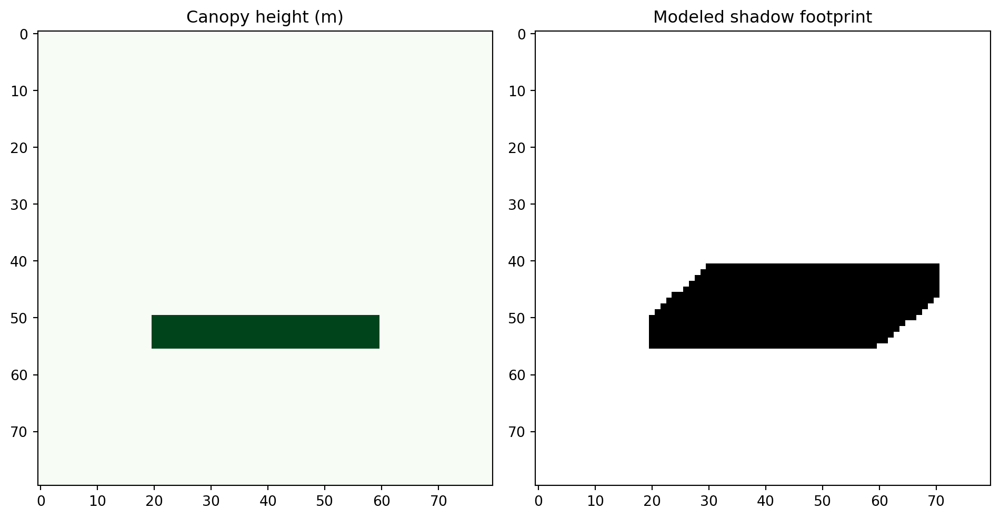
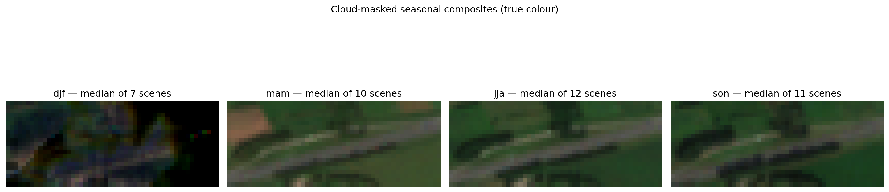
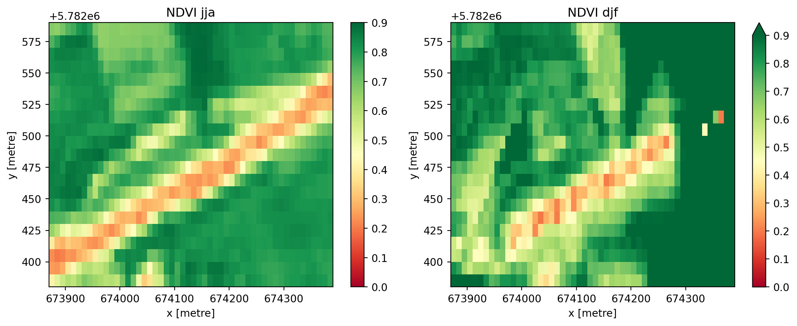
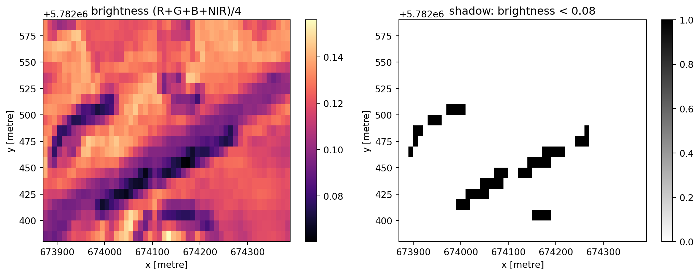
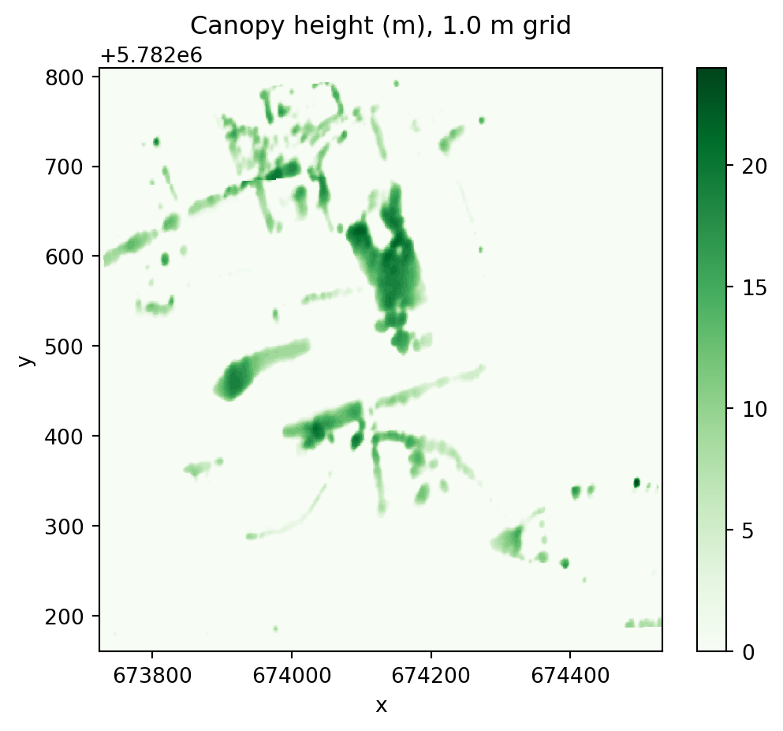
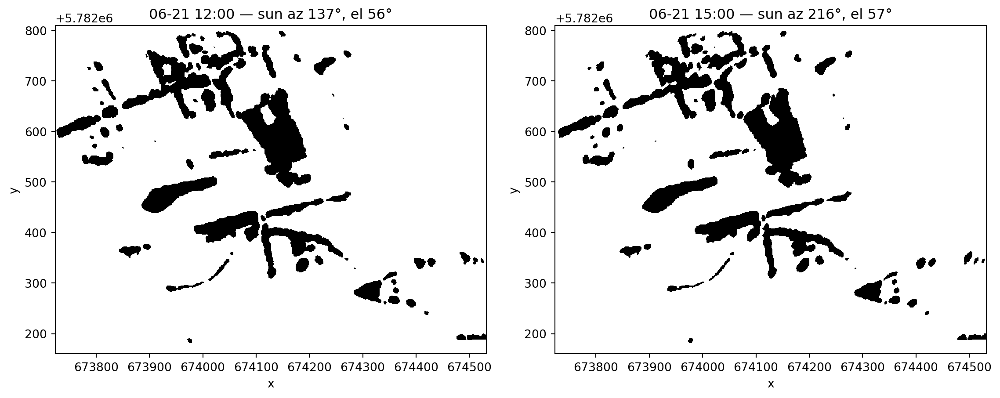

import numpy as np
import matplotlib.pyplot as plt
from shaduw_langs_de_snelweg.shadow import cast_shadow_maskIntroduction: shadow model demo
The pipeline’s headline metric is the modeled shadow fraction: canopy height + sun position -> shadow footprint at any date/time. This notebook demonstrates the shadow caster on a synthetic canopy, no downloads needed.
For the full pipeline run pixi run shaduw run --config configs/nl-prototype.toml.
# Synthetic 1 m canopy: a row of 12 m trees south of a bare parking
chm = np.zeros((80, 80), dtype="float32")
chm[50:56, 20:60] = 12.0# Summer afternoon: sun in the southwest, 40 degrees up
shadow = cast_shadow_mask(chm, resolution=1.0, azimuth_deg=230.0, elevation_deg=40.0)
fig, axes = plt.subplots(1, 2, figsize=(10, 5))
axes[0].imshow(chm, cmap="Greens")
axes[0].set_title("Canopy height (m)")
axes[1].imshow(shadow, cmap="gray_r")
axes[1].set_title("Modeled shadow footprint")
plt.tight_layout()
The pipeline, step by step
The synthetic demo above is the heart of the method, but the real pipeline wraps it in six data stages. One stop (a rest area) is one unit of work:
| stage | module | what happens |
|---|---|---|
| 1. Stops | stops.py |
seed point/polygon → parking polygon + analysis AOI |
| 2. Imagery | imagery.py |
STAC search → cloud-masked seasonal median composites (Sentinel-2, 10 m) |
| 3. Vegetation | metrics.py |
NDVI summer/winter, tree fraction |
| 4. Detected shadow | metrics.py |
dark-pixel fraction in the ~10:30 composites |
| 5. Canopy & modelled shadow | canopy.py, shadow.py |
1 m canopy height → shadow footprint at 12 h / 15 h on the summer solstice |
| 6. Score & outputs | score.py, outputs.py |
weighted 0–1 score → none/partial/good → GeoParquet + GeoPackage + web map |
Below we run every stage interactively for one real stop and watch the raw data turn into the final product. Everything comes from open sources (no accounts, no keys); the imagery step downloads a few MB from public S3 buckets, so it takes a minute or two on first run.
Configuration is one TOML file, validated by pydantic:
from shaduw_langs_de_snelweg.config import load_config
cfg = load_config("../../../configs/nl-prototype.toml")
print(f"seeds: {cfg.stops.seed_path.name}")
print(
f"imagery: {cfg.stac.collection} @ {cfg.stac.resolution} m, {cfg.stac.years_back} years back"
)
print(f"canopy: {cfg.canopy.source} @ {cfg.canopy.resolution} m")
print(f"shadow: {cfg.shadow.date} at {cfg.shadow.hours} h ({cfg.shadow.timezone})")seeds: nl-prototype.geojson
imagery: sentinel-2-l2a @ 10.0 m, 2 years back
canopy: meta @ 1.0 m
shadow: 06-21 at [12, 15] h (Europe/Amsterdam)Step 1 — from seed to parking polygon and AOI
A seed is a point or polygon in a GeoJSON file. Point seeds are resolved to the actual parking polygon via OpenStreetMap (Overpass); if nothing is found the point is buffered as a fallback. Around the parking we add a 30 m AOI buffer, because the trees that shade a parking usually stand next to it, not on it.
The prepared stop table is cached (cache/stops_prepared_<name>.geojson), so this cell does not hit Overpass on reruns:
from shaduw_langs_de_snelweg.pipeline import _stops_with_cache
stops = _stops_with_cache(cfg, force=False)
stops[["stop_id", "name", "polygon_source"]]| stop_id | name | polygon_source | |
|---|---|---|---|
| 0 | osm-way-84069111 | Uilengoor (A1) | osm |
| 1 | osm-way-438615192 | Korte Langesteijn | osm |
| 2 | osm-way-490680589 | Ronduit (A1) | osm |
| 3 | osm-way-608036225 | Oldenaller (A28) | buffer |
| 4 | osm-way-664516138 | De Mark (A2) | osm |
import folium
stop = stops.iloc[0] # Uilengoor along the A1
center = stop.geometry.centroid
m = folium.Map(location=[center.y, center.x], zoom_start=17)
folium.GeoJson(
stop["aoi"].__geo_interface__,
style_function=lambda f: {"color": "#1565c0", "fillOpacity": 0.05},
tooltip="AOI (parking + 30 m buffer)",
).add_to(m)
folium.GeoJson(
stop.geometry.__geo_interface__,
style_function=lambda f: {"color": "#c62828", "fillOpacity": 0.3},
tooltip="parking polygon (from OSM)",
).add_to(m)
mMake this Notebook Trusted to load map: File -> Trust Notebook
Step 2 — Sentinel-2 seasonal composites
We search a STAC catalogue once for all scenes over the AOI (last 2 years, < 30 % cloud cover), bucket them into meteorological seasons and reduce each bucket to a cloud-masked median composite. The median works because clouds and cloud shadows move between acquisitions while the surface does not — so the per-pixel median converges on the cloud-free view. Only the pixels inside the AOI are transferred (HTTP range reads on cloud-optimised GeoTIFFs), never a whole tile.
Downloading all scenes for the four seasons takes a minute or two, so the notebook uses the cached variant: the composites are stored on disk per stop and reruns load them in seconds. Delete cache/composites/ to fetch fresh imagery:
from shaduw_langs_de_snelweg.imagery import seasonal_composites_cached
composites = seasonal_composites_cached(
stop["aoi"], cfg.stac, cfg.cache_dir, stop["stop_id"]
)
{
season: (c.attrs["n_scenes"] if c is not None else 0)
for season, c in composites.items()
}{'djf': 7, 'mam': 10, 'jja': 12, 'son': 11}import numpy as np
import matplotlib.pyplot as plt
fig, axes = plt.subplots(1, 4, figsize=(16, 4.5))
for ax, (season, comp) in zip(axes, composites.items()):
ax.axis("off")
if comp is None:
ax.set_title(f"{season}: no scenes")
continue
rgb = np.dstack([comp[b].values for b in ("red", "green", "blue")])
ax.imshow(np.clip(rgb / 0.25, 0, 1)) # stretch reflectance for display
ax.set_title(f"{season} — median of {comp.attrs['n_scenes']} scenes")
fig.suptitle("Cloud-masked seasonal composites (true colour)", y=1.02)
plt.tight_layout()
Step 3 — vegetation: NDVI and its seasonal swing
NDVI = (NIR − red) / (NIR + red): healthy vegetation reflects strongly in near-infrared and absorbs red, so it scores high. Comparing summer (jja) against winter (djf) separates deciduous trees (large drop) from evergreen vegetation and grass. For NDVI the composites carry extra-masked bands (red_veg, nir_veg) where cloud shadow pixels are also removed — for shadow detection we deliberately keep those.
from shaduw_langs_de_snelweg.metrics import ndvi
fig, axes = plt.subplots(1, 2, figsize=(11, 4.5))
for ax, season in zip(axes, ("jja", "djf")):
ndvi(composites[season]).plot(ax=ax, vmin=0.0, vmax=0.9, cmap="RdYlGn")
ax.set_title(f"NDVI {season}")
plt.tight_layout()
Step 4 — detected shadow in the ~10:30 composites
Sentinel-2 passes over the Netherlands around 10:30 local time, so persistent dark pixels in the composite are morning shadow. “Dark” is broadband brightness (R+G+B+NIR)/4 below a calibrated threshold — NIR must be included, because vegetation is dark in the visible bands but bright in NIR, while true shadow is dark in all four.
The fraction is evaluated over the parking polygon only (that is where the car stands):
from shaduw_langs_de_snelweg.metrics import (
brightness,
detected_shadow_fraction,
mask_for_geometry,
)
jja = composites["jja"]
bright = brightness(jja)
fig, axes = plt.subplots(1, 2, figsize=(11, 4.5))
bright.plot(ax=axes[0], cmap="magma")
axes[0].set_title("brightness (R+G+B+NIR)/4")
(bright < cfg.detection.brightness_threshold).plot(ax=axes[1], cmap="gray_r")
axes[1].set_title(f"shadow: brightness < {cfg.detection.brightness_threshold}")
plt.tight_layout()
parking_mask = mask_for_geometry(jja, stop.geometry)
print(
"detected shadow fraction (summer, parking only):",
round(detected_shadow_fraction(jja, parking_mask, cfg.detection), 3),
)detected shadow fraction (summer, parking only): 0.0
Step 5 — canopy height and the modelled shadow footprint
The detected shadow only shows 10:30 — but a parked car cares about the afternoon. So we load a 1 m canopy height model (Meta/WRI, global, on AWS Open Data; the clipped window is cached per stop) and run the same ray-marching shadow caster from the synthetic demo on the real canopy, at the hours and date from the config (summer solstice, 12 h and 15 h). The sun position comes from pvlib.
from shaduw_langs_de_snelweg.canopy import load_canopy
chm = load_canopy(stop["aoi"], cfg.canopy, cfg.cache_dir, stop["stop_id"])
chm.plot(cmap="Greens", vmin=0, figsize=(6, 5))
plt.title(f"Canopy height (m), {cfg.canopy.resolution} m grid")Text(0.5, 1.0, 'Canopy height (m), 1.0 m grid')
import datetime as dt
from shaduw_langs_de_snelweg.shadow import (
local_time,
modeled_shadow_mask,
solar_position,
)
year = dt.date.today().year
fig, axes = plt.subplots(1, len(cfg.shadow.hours), figsize=(12, 5))
for ax, hour in zip(axes, cfg.shadow.hours):
when = local_time(cfg.shadow.date, hour, cfg.shadow.timezone, year)
azimuth, elevation = solar_position(center.y, center.x, when)
mask = modeled_shadow_mask(
chm, center.y, center.x, when, cfg.shadow.self_shade_height_m
)
mask.plot(ax=ax, cmap="gray_r", add_colorbar=False)
ax.set_title(
f"{cfg.shadow.date} {hour}:00 — sun az {azimuth:.0f}°, el {elevation:.0f}°"
)
plt.tight_layout()
Step 6 — metrics, score, class
compute_stop_metrics bundles all of the above with fixed zonal conventions: NDVI and tree fraction over the AOI, mean canopy height over the buffer ring, both shadow fractions over the parking polygon.
The composite score is a weighted mean — modelled 15 h shadow (0.5), tree fraction (0.3), detected summer shadow (0.2) — renormalised over whatever is available, so one missing input degrades the score gracefully instead of dragging it to zero. Class bounds: below 0.15 → none, above 0.40 → good, in between → partial.
import pandas as pd
from shaduw_langs_de_snelweg.metrics import compute_stop_metrics
from shaduw_langs_de_snelweg.score import shade_class, shade_score
metrics = compute_stop_metrics(
parking_geom_4326=stop.geometry,
aoi_geom_4326=stop["aoi"],
composites=composites,
chm=chm,
detection_cfg=cfg.detection,
shadow_cfg=cfg.shadow,
tree_threshold=cfg.canopy.tree_height_threshold_m,
)
metrics["shade_score"] = shade_score(metrics, cfg.score)
metrics["shade_class"] = shade_class(metrics["shade_score"], cfg.score)
pd.Series(metrics).round(3)ndvi_summer 0.62146
ndvi_winter 0.726294
ndvi_delta -0.104834
tree_fraction 0.151751
mean_canopy_height 1.748198
shadow_frac_detected_djf 0.740741
shadow_frac_detected_mam 0.0
shadow_frac_detected_jja 0.0
shadow_frac_detected_son 0.031746
n_scenes_used 40
shadow_frac_modeled_12h 0.190469
shadow_frac_modeled_15h 0.190736
shade_score 0.140893
shade_class none
dtype: object# The score, written out by hand — same number as shade_score() above:
s = cfg.score
manual = (
s.w_modeled_15h * metrics["shadow_frac_modeled_15h"]
+ s.w_tree_fraction * metrics["tree_fraction"]
+ s.w_detected_summer * metrics["shadow_frac_detected_jja"]
)
print(
f"manual: {manual:.4f} shade_score(): {metrics['shade_score']:.4f}"
f" class: {metrics['shade_class']}"
)manual: 0.1409 shade_score(): 0.1409 class: noneStep 7 — the product
In a batch run every stop becomes one row in a GeoDataFrame, written as GeoParquet (analysis), GeoPackage (GIS) and an interactive web map where each stop is coloured by its shade class. This is our single stop rendered exactly like the final map:
from shaduw_langs_de_snelweg.outputs import CLASS_COLORS
color = CLASS_COLORS[metrics["shade_class"]]
m = folium.Map(location=[center.y, center.x], zoom_start=16)
folium.GeoJson(
stop.geometry.__geo_interface__,
style_function=lambda f, c=color: {"color": c, "fillColor": c, "fillOpacity": 0.35},
).add_to(m)
folium.CircleMarker(
location=[center.y, center.x],
radius=7,
color=color,
fill=True,
fill_opacity=0.9,
popup=folium.Popup(
f"<b>{stop['name']}</b><br>"
f"shade_score: {metrics['shade_score']:.3f}<br>"
f"shade_class: {metrics['shade_class']}<br>"
f"modelled 15h shadow: {metrics['shadow_frac_modeled_15h']:.3f}<br>"
f"tree fraction: {metrics['tree_fraction']:.3f}",
max_width=300,
),
).add_to(m)
mMake this Notebook Trusted to load map: File -> Trust Notebook
Running it at scale
The batch pipeline is the same code in a loop, with two layers of on-disk caching (the prepared stop table and one JSON per finished stop), so interrupted runs resume where they left off and failed stops are retried on the next run:
pixi run run # 5 prototype stops
pixi run discover # find all ~545 NL rest/service areas in OSM
pixi run run-full # process all of them (8 parallel workers)